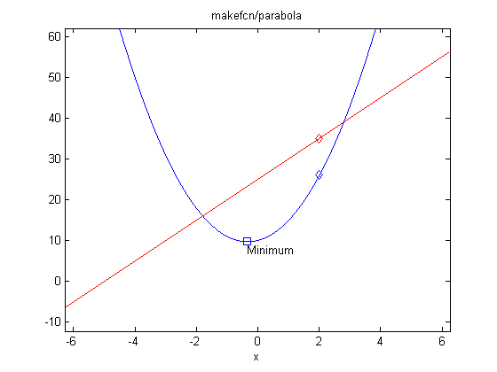

This gives examples of how nested functions can be used for easy data sharing, as well as providing a new way to create customized functions.
Let's first take a look at taxDemo.m, which contains a nested function.
type taxDemo.m
function y = taxDemo(income)
%TAXDEMO Used by NESTEDDEMO.
% Calculate the tax on income.
% Copyright 1984-2004 The MathWorks, Inc.
% $Revision: 1.1.6.2 $ $Date: 2004/03/02 21:47:05 $
AdjustedIncome = income - 6000; % Calculate adjusted income
% Call 'computeTax' without passing 'AdjustedIncome' as a parameter.
y = computeTax;
function y = computeTax
% This function can see the variable 'AdjustedIncome'
% in the calling function's workspace
y = 0.28 * AdjustedIncome;
end
end
The nested function computeTax can see the variables in the parent function's workspace. This makes sharing of data between multiple nested functions easy and particularly useful when processing large data sets. We can call the function in the usual way.
y=taxDemo(80e3) % What is the tax on $80k income?
y = 2.0720e+004
For nested functions, the end statement is required at the end of a function. You can also nest functions to any level.
Nested functions allow the ability to create customized functions. Let's look at makefcn.m which contains a nested function.
type makefcn.m
function fcn = makefcn(a,b,c)
%MAKEFCN Used by NESTEDDEMO.
% This function returns a handle to a customized version of 'parabola'.
% a,b,c specifies the coefficients of the function.
% Copyright 1984-2004 The MathWorks, Inc.
% $Revision: 1.1.6.2 $ $Date: 2004/03/02 21:46:56 $
fcn = @parabola; % Return handle to nested function
function y = parabola(x)
% This nested function can see the variables 'a','b', and 'c'
y = a*x.^2 + b.*x + c;
end
end
When you call makefcn, it returns a function handle to a customized function. For example:
f = makefcn(3,2,10); g = makefcn(0,5,25);
f and g are handles to two functions, each with different coefficients. We can evaluate the functions by using their function handles and passing in parameters.
y=f(2)
y =
26
y=g(2)
y =
35
We can also pass the handle to function functions, such as optimization or integration.
minimum=fminbnd(f,-5,5);
Or plot the function over a range.
ezplot(f); % Plot f over a range of x hold on; plot(2,f(2),'d'); % Plot a marker at (2,f(2)) plot(minimum,f(minimum),'s'); % Plot at minimum of f text(minimum,f(minimum)-2,'Minimum'); h=ezplot(g); set(h,'color','red') % Plot g over a range of x plot(2,g(2),'rd'); % Plot a marker at (2,g(2)) hold off;
Let's look at makecounter.m which contains a nested function.
type makecounter.m
function countfcn = makecounter(initvalue)
%MAKECOUNTER Used by NESTEDDEMO.
% This function returns a handle to a customized nested function 'getCounter'.
% initvalue specifies the initial value of the counter whose's handle is returned.
% Copyright 1984-2004 The MathWorks, Inc.
% $Revision: 1.1.6.2 $ $Date: 2004/03/02 21:46:55 $
currentCount = initvalue; % Initial value
countfcn = @getCounter; % Return handle to getCounter
function count = getCounter
% This function increments the variable 'currentCount', when it
% gets called (using its function handle) .
currentCount = currentCount + 1;
count = currentCount;
end
end
When you call makecounter, it returns a handle to its nested function getCounter. getCounter is customized by the value of initvalue, a variable it can see via nesting within the workspace of makecounter.
counter1 = makecounter(0); % Define counter initialized to 0 counter2 = makecounter(10); % Define counter initialized to 10
Here we have created two customized counters: one which starts at 0 and one which starts at 10. Each handle is a separate instance of the function and its calling workspace. Now we can call the inner nested function via its handle. counter1 does not take parameters but it could.
counter1Value=counter1()
counter1Value =
1
We can call the two functions independently as there are two separate workspaces for the parent functions kept. They remain in memory while the handles to their nested functions exist. In this case the currentCount variable gets updated when counter1 is called.
counter1Value=counter1()
counter1Value =
2
counter2Value=counter2()
counter2Value =
11